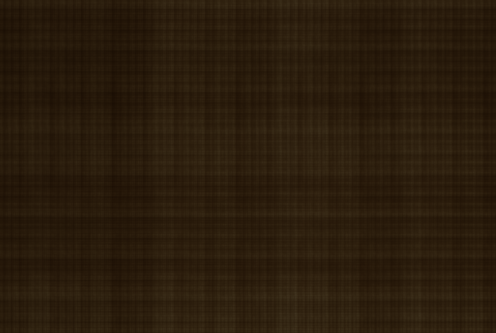
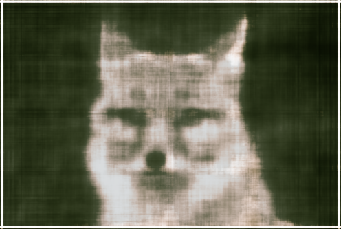
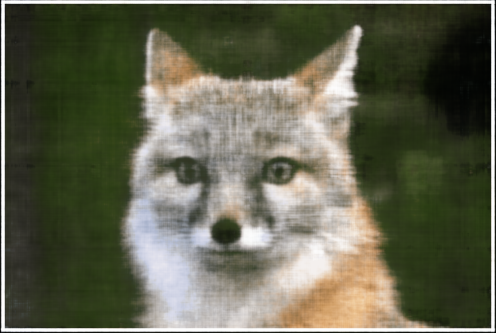
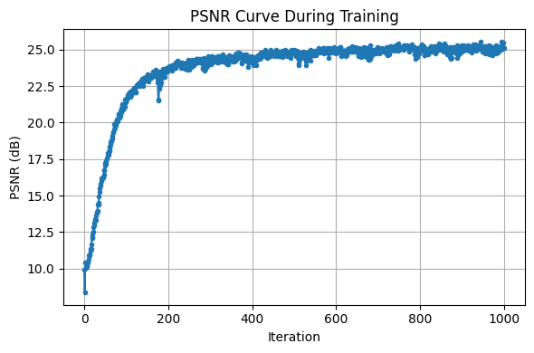
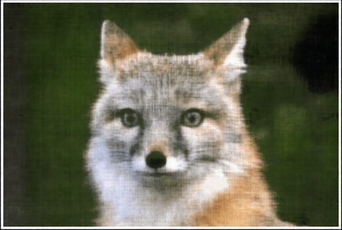
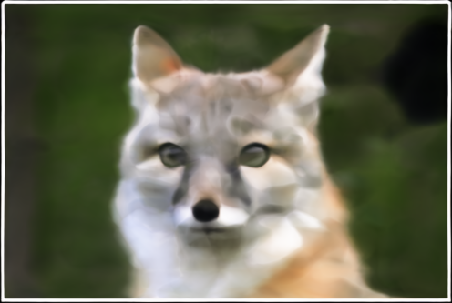
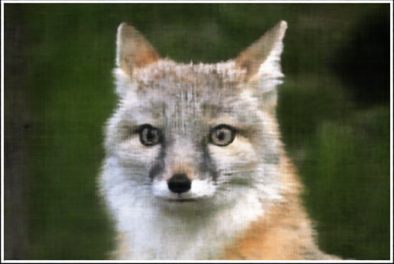
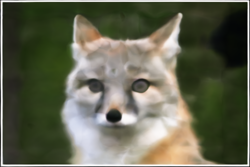

Lets create a neural field that can represent a 2D image and optimize that neural field to fit this image.
Model architecture:
Training Progression: Snapshots of the neural field during training:
Image 1 (provided):






| Width 256, Max PE 10 | Width 256, Max PE 4 |
|---|---|
 |
 |
| Width 128, Max PE 10 | Width 128, Max PE 4 |
 |
 |
To do this, we first converts a pixel coordinate to a ray with origin and normalized direction.
We can convert from pixel coordinates to camera coordinates using the camera's intrinsic matric K. Since the image is 2d, we do this by picking a ray that points to the world coordinate through the camera.
For this transformation from camera to world coordinates, we use the extrinsics matrix.
Now, we can sample sets of images to get the pixel colors, coordinates, ray origins and directions. I chose to sample M images, and then sample N // M rays from every image.
On each of these rays, I sample 32 uniformly distanced set of points along the length.
Below, I show what a visualization of this. The first is sampled from a set camera, while the second shows points sampled along multiple, with the colors loaded along the points. I could not get Viser to work with python notebooks, so I used ipyvolume.
After having samples in 3D, I want to use the network to predict the density and color for those samples in 3D.
So I created a MLP similar to Part 1, but with 3D coordinates and much deeper.